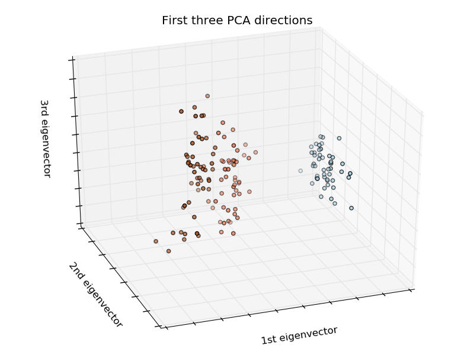
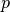

监督学习：从高维观测中预测一个输出变量¶
监督学习想要解决的问题
监督学习
的核心在于学习两个数据集之间的联系，这两个数据集分别是 观测数据集(X) 和
一个我们想要预测的外部变量(y)
此外部变量通常情况下被称之为 目标值(“target”), 或 类标签(“labels”);
大多数时候，y 是一个n_samples
长度的一维数组.
scikit-learn 中所有的监督学习算法estimators对象都实现了成员方法
fit(X, y) 用于拟合数据模型，
还实现了一个成员方法 predict(X) 用于预测数据集 X
中的未知标签的样本,并返回预测的标签 y.
词汇: 分类 与 回归
如果一个预测任务是在有限的标签集合中分类观测数据或者说是给每个观测对象起名，那么 这样的预测任务就叫分类任务；另一方面，如果我们的目标是根据数据集预测一个连续变化的目标变量 ，那这样的预测任务就叫回归任务。所以在我们的语境中，预测是一个包含了分类与回归的更广泛的语义。
使用 scikit-learn 做分类任务时, y 是一个整型的或字符串型的数组。
注意啦: 你可以在此处 使用 scikit-learn 进行机器学习之导论 快速查看一下机器学习的基本词汇的含义。
最近邻 与 维数灾难¶
分类鸢尾花:
鸢尾花数据集(iris dataset)是一个分类任务，目标是依据花萼与花瓣的长度和宽度辨识三种不同品种的鸢尾花 (Setosa, Versicolour, 和 Virginica):
>>> import numpy as np
>>> from sklearn import datasets
>>> iris = datasets.load_iris()
>>> iris_X = iris.data
>>> iris_y = iris.target
>>> np.unique(iris_y)
array([0, 1, 2])
KNN 分类器¶
最简单的分类器就是
最近邻分类器(Nearest Neighbor):
给定一个新的观测：X_test, 在训练集合中寻找与该观测最近的那个特征向量。
(关于此分类器详情请看 scikit-learn 文档的 Nearest Neighbors 章节。)
训练集与测试集
当我们做实验研究一个学习算法的时候，请不要用拟合estimator的时候用过的数据去测试它的预测性能 ，这一点非常重要。我们必须用新的数据new data来测试其预测性能，以便知道其泛化性究竟如何. 这就是为什么数据集通常都被划分成训练集和测试集的原因了。
KNN (k nearest neighbors) 分类器例子:

>>> # Split iris data in train and test data
>>> # A random permutation, to split the data randomly
>>> np.random.seed(0)
>>> indices = np.random.permutation(len(iris_X))
>>> iris_X_train = iris_X[indices[:-10]]
>>> iris_y_train = iris_y[indices[:-10]]
>>> iris_X_test = iris_X[indices[-10:]]
>>> iris_y_test = iris_y[indices[-10:]]
>>> # Create and fit a nearest-neighbor classifier
>>> from sklearn.neighbors import KNeighborsClassifier
>>> knn = KNeighborsClassifier()
>>> knn.fit(iris_X_train, iris_y_train)
KNeighborsClassifier(algorithm='auto', leaf_size=30, metric='minkowski',
metric_params=None, n_jobs=1, n_neighbors=5, p=2,
weights='uniform')
>>> knn.predict(iris_X_test)
array([1, 2, 1, 0, 0, 0, 2, 1, 2, 0])
>>> iris_y_test
array([1, 1, 1, 0, 0, 0, 2, 1, 2, 0])
维数灾难¶
For an estimator to be effective, you need the distance between neighboring
points to be less than some value  , which depends on the problem.
In one dimension, this requires on average
, which depends on the problem.
In one dimension, this requires on average  points.
In the context of the above
points.
In the context of the above  -NN example, if the data is described by
just one feature with values ranging from 0 to 1 and with
-NN example, if the data is described by
just one feature with values ranging from 0 to 1 and with  training
observations, then new data will be no further away than
training
observations, then new data will be no further away than  .
Therefore, the nearest neighbor decision rule will be efficient as soon as
is small compared to the scale of between-class feature variations.
.
Therefore, the nearest neighbor decision rule will be efficient as soon as
is small compared to the scale of between-class feature variations.
If the number of features is , you now require  points. Let’s say that we require 10 points in one dimension: now
points. Let’s say that we require 10 points in one dimension: now  points are required in dimensions to pave the space.
As becomes large, the number of training points required for a good
estimator grows exponentially.
points are required in dimensions to pave the space.
As becomes large, the number of training points required for a good
estimator grows exponentially.
For example, if each point is just a single number (8 bytes), then an
effective -NN estimator in a paltry  dimensions would
require more training data than the current estimated size of the entire
internet (±1000 Exabytes or so).
dimensions would
require more training data than the current estimated size of the entire
internet (±1000 Exabytes or so).
This is called the curse of dimensionality and is a core problem that machine learning addresses.
线性模型: 从回归到稀疏¶
糖尿病数据集(Diabetes dataset)
糖尿病数据集包含了442个病人的10个生理变量(年龄,性别，体重，血压)数据, 还有一年后疾病发展状况:
>>> diabetes = datasets.load_diabetes()
>>> diabetes_X_train = diabetes.data[:-20]
>>> diabetes_X_test = diabetes.data[-20:]
>>> diabetes_y_train = diabetes.target[:-20]
>>> diabetes_y_test = diabetes.target[-20:]
对于此数据集，我们的任务是根据生理变量指标来预测疾病进展状况。
线性回归¶
LinearRegression,
线性回归的最简单形式是通过调节一个参数集合为数据集拟合一个线性模型,使得其残差平方和尽可能小。

线性模型: 
: 数据
: 目标变量
- : 系数
: 观测噪声
>>> from sklearn import linear_model
>>> regr = linear_model.LinearRegression()
>>> regr.fit(diabetes_X_train, diabetes_y_train)
LinearRegression(copy_X=True, fit_intercept=True, n_jobs=1, normalize=False)
>>> print(regr.coef_)
[ 0.30349955 -237.63931533 510.53060544 327.73698041 -814.13170937
492.81458798 102.84845219 184.60648906 743.51961675 76.09517222]
>>> # The mean square error
>>> np.mean((regr.predict(diabetes_X_test)-diabetes_y_test)**2)
2004.56760268...
>>> # Explained variance score: 1 is perfect prediction
>>> # and 0 means that there is no linear relationship
>>> # between X and Y.
>>> regr.score(diabetes_X_test, diabetes_y_test)
0.5850753022690...
Shrinkage¶
如果每一维上的数据点都非常少，观测噪声将会引入很大的方差：
>>> X = np.c_[ .5, 1].T
>>> y = [.5, 1]
>>> test = np.c_[ 0, 2].T
>>> regr = linear_model.LinearRegression()
>>> import pylab as pl
>>> pl.figure()
>>> np.random.seed(0)
>>> for _ in range(6):
... this_X = .1*np.random.normal(size=(2, 1)) + X
... regr.fit(this_X, y)
... pl.plot(test, regr.predict(test))
... pl.scatter(this_X, y, s=3)
高维统计学习中的一个解决方案是将回归系数缩小(shrink)到零:
任何两个随机选择的观测集合都可能是不相关的。 这被叫做岭回归(Ridge regression):
>>> regr = linear_model.Ridge(alpha=.1)
>>> pl.figure()
>>> np.random.seed(0)
>>> for _ in range(6):
... this_X = .1*np.random.normal(size=(2, 1)) + X
... regr.fit(this_X, y)
... pl.plot(test, regr.predict(test))
... pl.scatter(this_X, y, s=3)
这是一个在偏差与方差之间折中(bias/variance tradeoff)的例子：
岭参数alpha 越大,偏置越大同时方差却越小。
我们可以通过选择参数 alpha 来最小化左侧输出误差。
这次的例子我们使用糖尿病数据集(diabetes dataset)而不是我们人工合成的数据:
>>> alphas = np.logspace(-4, -1, 6)
>>> from __future__ import print_function
>>> print([regr.set_params(alpha=alpha
... ).fit(diabetes_X_train, diabetes_y_train,
... ).score(diabetes_X_test, diabetes_y_test) for alpha in alphas])
[0.5851110683883..., 0.5852073015444..., 0.5854677540698..., 0.5855512036503..., 0.5830717085554..., 0.57058999437...]
注意
Capturing in the fitted parameters noise that prevents the model to generalize to new data is called 过拟合(overfitting)。 岭回归引入的偏置被称为 正则化(regularization)。
稀疏性¶
仅仅拟合特征 1 和 2
注意：
糖尿病数据集总共有11个维度(10个特征分量和一个目标变量)。 在这么高的维度上我们很难产生对数据集的直觉想想 但是我们因该始终记住这个数据集的分布空间其实是一个相当稀疏的空间(empty space)。
我们可以从图中看到，尽管第二个特征分量在完整模型中有很强的系数,
但是与第一个特征分量相比，它承载了关于y的非常少的信息。
为了改善问题的求解条件(也就是 减轻 维数灾难), 仅仅选择那些信息量大的特征而把几乎不能提供有用信息的特征(比如x_2)置为0的做法将十分有趣。 岭回归(Ridge regression)虽然能够降低那些垃圾特征(non-informative features)的贡献,但是它无法把他们的影响 完全归零。另外一种惩罚方法被称之为 最小绝对缩减与选择算子Lasso (least absolute shrinkage and selection operator), 可以将某些系数设置为0. 这样的方法被称为稀疏方法(sparse method)。 稀疏性原则可以被视为是奥坎姆剃刀原则的一个应用。
>>> regr = linear_model.Lasso()
>>> scores = [regr.set_params(alpha=alpha
... ).fit(diabetes_X_train, diabetes_y_train
... ).score(diabetes_X_test, diabetes_y_test)
... for alpha in alphas]
>>> best_alpha = alphas[scores.index(max(scores))]
>>> regr.alpha = best_alpha
>>> regr.fit(diabetes_X_train, diabetes_y_train)
Lasso(alpha=0.025118864315095794, copy_X=True, fit_intercept=True,
max_iter=1000, normalize=False, positive=False, precompute=False,
random_state=None, selection='cyclic', tol=0.0001, warm_start=False)
>>> print(regr.coef_)
[ 0. -212.43764548 517.19478111 313.77959962 -160.8303982 -0.
-187.19554705 69.38229038 508.66011217 71.84239008]
针对同一问题的不同算法
同一个数学问题可以使用不同的算法来求解。例如，在scikit-learn中Lasso 对象
使用对大数据集特别有效率的坐标下降法(coordinate decent)解决了lasso回归问题；
然而，scikit-learn也提供了 LassoLars 对象
使用的是 LARS 算法,该算法对那些估计出的权值向量非常稀疏(通常是因为观测数据特别少造成的)的问题非常有效。
分类¶
对于分类问题，比如标记鸢尾花的 iris 任务, 线性回归不再是一个正确的方法， 因为他将会给那些远离决策前沿(decision frontier)的数据点分配太大的权重。一种可用的线性方法是去拟合一个 sigmoid函数或logistic函数。
>>> logistic = linear_model.LogisticRegression(C=1e5)
>>> logistic.fit(iris_X_train, iris_y_train)
LogisticRegression(C=100000.0, class_weight=None, dual=False,
fit_intercept=True, intercept_scaling=1, max_iter=100,
multi_class='ovr', n_jobs=1, penalty='l2', random_state=None,
solver='liblinear', tol=0.0001, verbose=0, warm_start=False)
这就是众所周知的逻辑斯特回归 LogisticRegression.
多类别分类
如果你要预测多个类，一个经常使用的方法是去拟合多个一对多分类器(one-versus-all classifiers) ，然后使用投票启发式的方法做出最终的决策。
逻辑斯特回归中的 Shrinkage 和 sparsity
参数 C 控制着LogisticRegression
对象的正则化的量： C 的值越大，正则化的量越小。
惩罚因子penalty="l2" 给出 Shrinkage (i.e. non-sparse coefficients), 而
penalty="l1" 给出 Sparsity.
练习题
尝试使用最近邻算法和线性模型分类digits数据集。留出数据集中最后的10%然后测试模型在这些观测数据 上的预测性能。
from sklearn import datasets, neighbors, linear_model
digits = datasets.load_digits()
X_digits = digits.data
y_digits = digits.target
Solution: ../../auto_examples/exercises/digits_classification_exercise.py
支持向量机 (SVMs)¶
线性 SVMs¶
支持向量机(Support Vector Machines)
属于判别模型的家族(the discriminant model family): 他们试图找到一些样本组合来构建一个能够最大化两类之间的边缘的分离平面。
正则化项用参数 C 进行设置:
a small value for C means the margin
is calculated using many or all of the observations around the separating line
(more regularization);
a large value for C means the margin is calculated on observations close to
the separating line (less regularization).
| 无正则化 SVM | 正则化 SVM (默认) |
|---|---|
SVMs 既可以被用于回归问题 –SVR
(Support Vector Regression)–, 也可以被用于分类 –SVC (Support Vector Classification).
>>> from sklearn import svm
>>> svc = svm.SVC(kernel='linear')
>>> svc.fit(iris_X_train, iris_y_train)
SVC(C=1.0, cache_size=200, class_weight=None, coef0=0.0,
decision_function_shape=None, degree=3, gamma='auto', kernel='linear',
max_iter=-1, probability=False, random_state=None, shrinking=True,
tol=0.001, verbose=False)
警告：
归一化数据
对于很多 estimators 对象, 包括 SVMs, 为了获得好的预测结果， 使得数据集中每一个特征分量具有单位标准差(unit standard deviation for each feature)是非常重要的。
使用核函数¶
多个类别在其特征空间并不总是线性可分的。解决的办法是使用多项式决策函数而不是线性决策函数。 这可以通过使用核函数(kernel trick) that can be seen as 通过将核函数放置在观测数据集上创造一个决策能量(creating a decision energy by positioning kernels on observations):
| Linear kernel | Polynomial kernel |
>>> svc = svm.SVC(kernel='linear')
|
>>> svc = svm.SVC(kernel='poly',
... degree=3)
>>> # degree: polynomial degree
|
| RBF kernel (径向基函数) |
>>> svc = svm.SVC(kernel='rbf')
>>> # gamma: inverse of size of
>>> # radial kernel
|
交互式例子
请看 SVM GUI 下载
svm_gui.py; 使用鼠标左键与右键分别为两个类添加数据点，然后拟合模型。可以不断的改变数据和参数观看分类效果。
练习
尝试使用SVMs分类iris数据集中的类1与类2，只用前两个特征。 为每个类留出10%的测试样本去测试分类器的效果。
警告: 类的数据是有序存放的，不要留出最后的10%，那样你将只在一类上进行了测试而已。
提示: 你可以将 decision_function 方法应用到一个网格上去获得启发式信息。
iris = datasets.load_iris()
X = iris.data
y = iris.target
X = X[y != 0, :2]
y = y[y != 0]